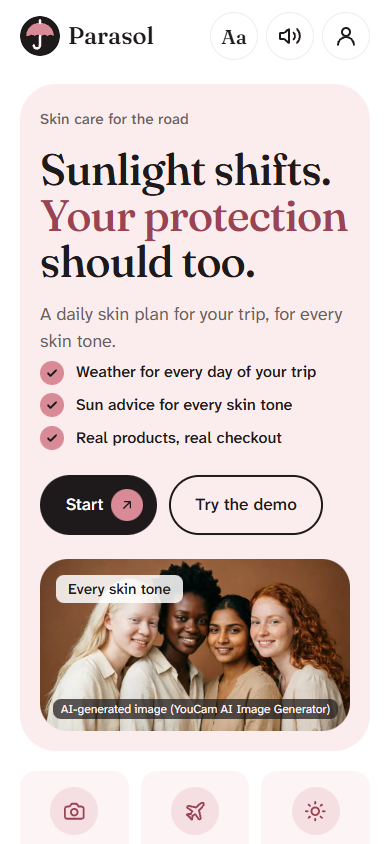
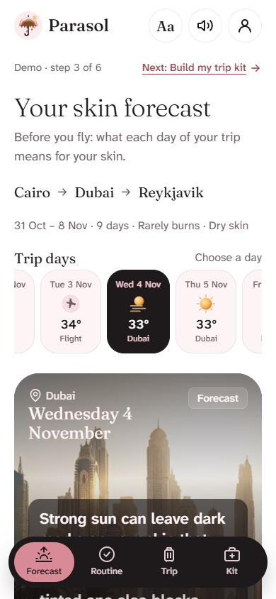
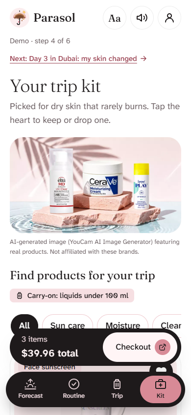
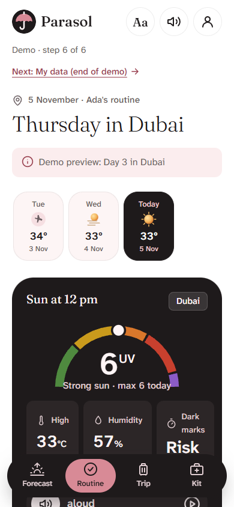
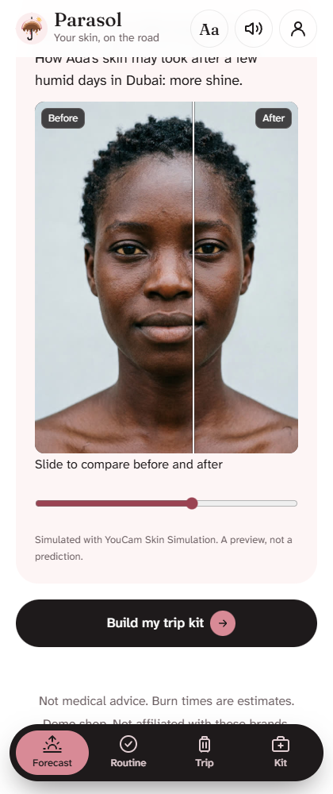
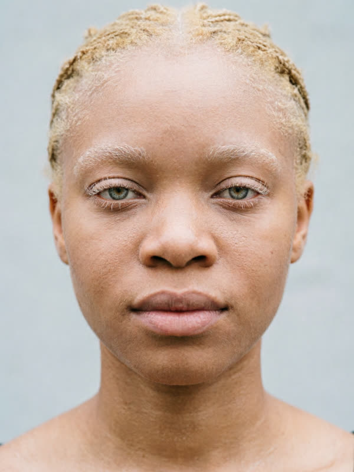
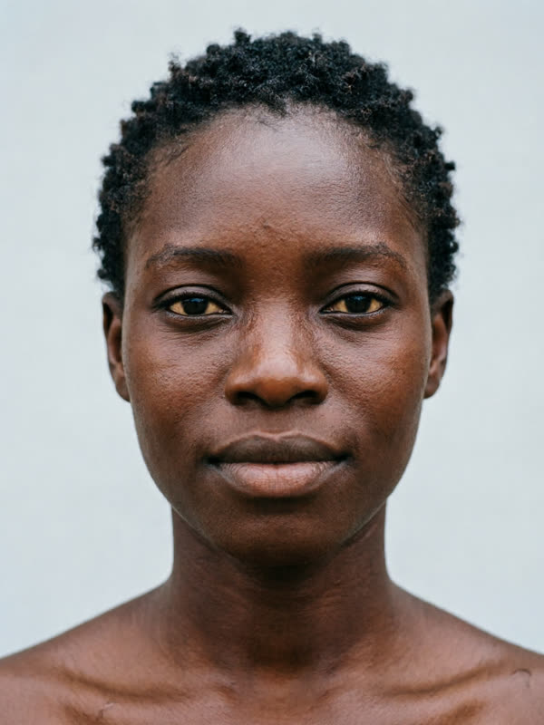
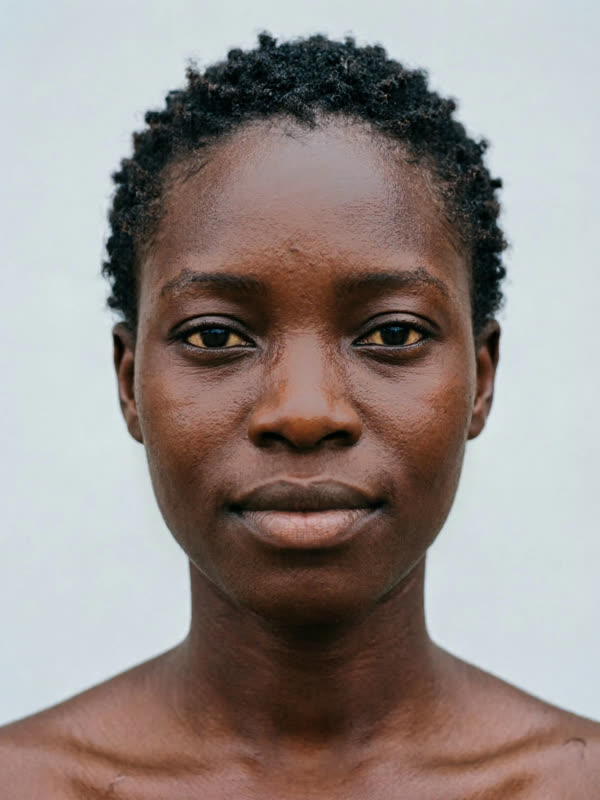

YouCam API Skin AI Hackathon · Skin AI track
Sun safety for people with albinism, and every skin on the road.
One selfie and your trip in. A day-by-day skin forecast that always uses the most protective setting for albinism, and a carry-on kit for every skin.
The problem
people in Sub-Saharan Africa have albinism. In some countries most of them die from skin cancer between 30 and 40. Many also have low vision. (United Nations)
Skin cancer is "a leading cause of death" in people with albinism, who "develop skin cancer young, often in early adulthood." (WHO cancer agency, IARC)
of skin-of-colour shoppers name white cast as a barrier to sunscreen, vs White respondents. They want to buy; the products don't fit. (Wang et al., 2024)
Sources: United Nations, International Albinism Awareness Day (un.org/en/observances/albinism-day) · IARC, Persons with albinism (albinism.iarc.who.int) · Wang et al., J Drugs Dermatol 2024;23(6):456-462.
The solution
Built around the brief's three moments, on a trip.
YouCam reads skin type by zone, 8 concerns and sun type I–VI. Real hourly weather per city becomes a daily forecast, a burn clock, and a kit of real products with checkout.
Rescan in the hotel. Parasol shows only real changes, names the likely cause from the weather since you landed, and gives a "tonight" list and a safety line.
Today's routine for today's weather, read aloud, and a sun timer that counts down to your next reapply.
The product

Start

Forecast + burn clock

Kit, with why

Today + sun timer

Skin Simulation
How YouCam powers it
POST /file/skin-analysis → one file_id
On Sam's AI-generated face (albinism) the analyzer returned type V. Parasol shows the real reading, then protects with type I when you say you have albinism. One tap to change it.


Ada, before and simulated "Day 3 in Dubai". Then analysed for real. Units guarded: caps, unit floor, cache by photo hash.
Inclusion and accessibility
Burn clock and protect hours from UV 2. Albinism always uses the most protective sun type. Hat, sleeves, UV400 glasses in the kit.
Never told to skip sunscreen, at any UV (a test checks it). Dark-mark advice, and no-white-cast sunscreens first.
Big text, AAA contrast, gentle dark for light-sensitive eyes, read aloud on every page, screen-reader landmarks, 48 px targets.
Business model
When a traveller buys their trip kit, Parasol earns a commission (affiliate or shop revenue share, typically 5–15%). Works from day one.
Hotels, airlines and travel apps send guests a pre-trip skin forecast and share the kit revenue.
Pharmacies, duty-free and beauty retailers add a "Where are you travelling?" kit builder, for a monthly fee.
Funded by the models above. For Perfect Corp: YouCam already powers 800+ beauty brands; Parasol takes YouCam into travel and travel retail, new places for those brands to reach buyers.
Where it stands, honestly
Parasol hasn't been tested with people with albinism or low vision yet. That's the first thing to do: with albinism groups in Nigeria, on low-end phones.
Roadmap
With albinism groups in Nigeria and across Africa. Make it fast on low-end phones.
Retailers plug in their own products: "your trip kit" next to a YouCam scan.
A rescan reminder on day 2 or 3, and offline mode for flights.
Yoruba, Hausa, Igbo and Nigerian Pidgin for read-aloud.
Team
Solo builder, Lagos.
App parasol-topaz.vercel.app
Code github.com/imprint-hash/parasol